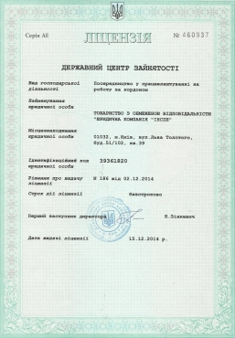

| |
РАБОТА В ЕВРОПЕ ДЛЯ ВАС ЕСТЬ |
||||||
Компания |
|||||||
| |
РАБОТА В ЕВРОПЕ ДЛЯ ВАС ЕСТЬ |
||||||
Компания |
|||||||
О НАС За недолгий период работы сотрудники компании успели продемонстрировать, что ее деятельность ведется в соответствии с ценностями, задекларированными ЮК «Инспе», среди которых: соответствие законодательству, гарантированный подбор варианта, который удовлетворяет обе стороны контракта, оперативное реагирование, поиск и устранение проблем (при необходимости, даже если кандидат находится уже в Польше). Активная работа специалистов компании позволила уже сегодня установить тесное сотрудничество с известными компаниями – крупная международная корпорация «Икея», имеющая в Польше более 10 производственных предприятий, которые производят различные товары для дома и уюта,; крупнейшие корпорации , с узнаваемыми брендами ZARA ,Kaufland, TESCO , несколько предприятий, находящихся на территории Польши «Samsung»,; логистическая компания DHL, и другие. . Работа в Польше, Финлянди, Норвегии, Швейцарии, Германии может быть постоянной и сезонной. В последнем случае это, как правило, занятость в фермерских хозяйствах различной специализации (растениеводство, животноводство). ЮК «Инспе» не только находит работодателя, но и осуществляет клиентскую поддержку на протяжении всего срока контракта, визовую поддержку, консультации по вопросам проживания и работы в стране, медицинское обслуживание по страховке. Наша компания обеспечивает легальное трудоустройство в Европе. Также у нас есть представители в регионах. Их контакты можно посмотреть тут |
 |
©2015 ЮК "Инспе" |